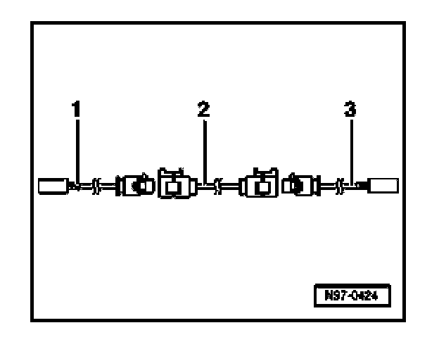

Antenna Connector Cable, Replacing
Antenna Connector Cable, Replacing
NOTE: The antenna cable system (antenna connector and adaptor cable sections) depends on the available and optional audio equipment installed in the vehicle. The antenna cable system may also include routing to an antenna selection control module, splitter, antenna booster or other signal processing unit as required by the radio system. Regardless of layout, only the faulty antenna cable section (antenna connector cable or adapter) must be replaced.
- Disconnect cable connections from faulty antenna connector/adapter sections from unit (radio, antenna etc.).
- Determine the routing of the antenna cable system in the vehicle and calculate the total length of the entire antenna cable layout between units (radio, antenna etc.).

Calculation of the total length includes the required adapter cable sections -1 and/or -3-, and connector cable section -2- where applicable.
- Subtract 60 cm from the total length calculation for a connector cable to account for the adapter cable sections.
- Using the calculated length, obtain the appropriate connector cable (and adaptor cable if necessary) from the parts catalog.
- Cut the cable connection from the faulty antenna cable section.
The faulty antenna cable section remains in the vehicle.
- Remove interior trim as necessary.
- Overlay and install replacement antenna cable section parallel with old cable.
CAUTION: Antenna cable must not be kinked or bent excessively during installation. Do not attempt to bend antenna cable in a radius smaller than 50 mm.
- Connect replacement antenna cable sections as required.
- Reinstall interior trim as necessary.
- Perform functional test of radio/antenna system.